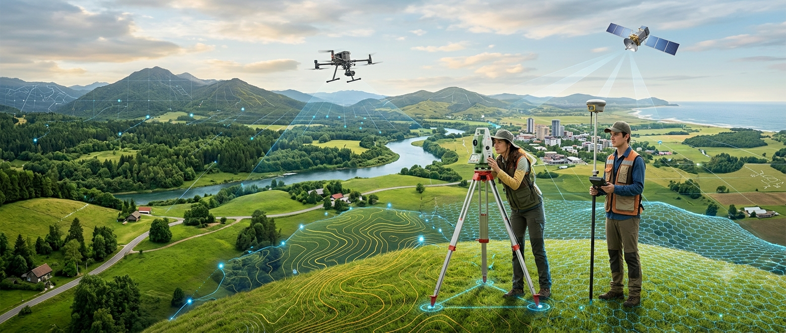

▦ Raster data analysis (W9-W11)
📑 Slides
W10: Digital Elevation Models
W10 Geomorphometric Variables Derived from DEMs
W12 Remote Sensing
📖 Reading
W12: Remote Sensing NASA course
W12: Google Earth Engine Introduction
🎬 W12: Google Earth Engine Introductory vide
💻 Practical